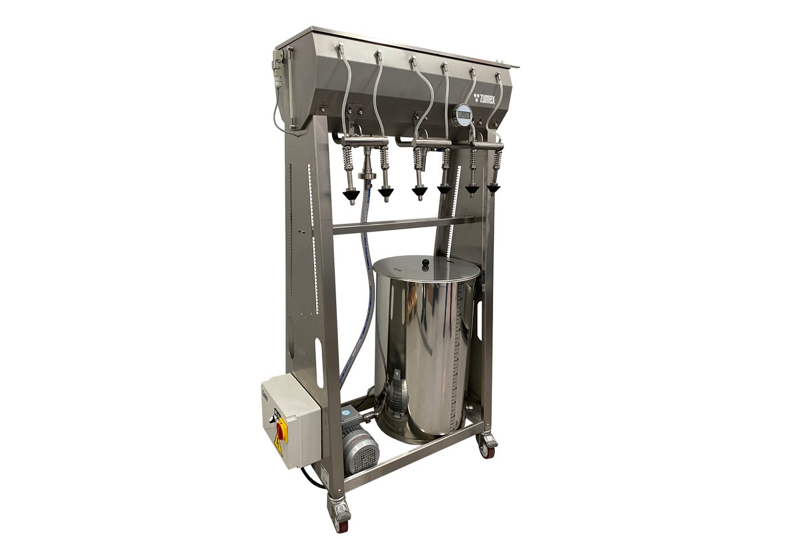
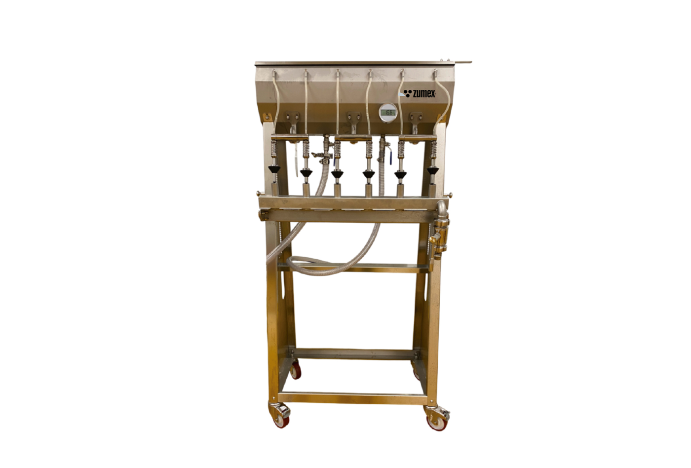

Průmyslové
ZF / ZBIB
Připraveno k plnění.
Plnicí a stáčecí technologie pro hotovou šťávu. Řada zahrnuje plnění lahví i systém Bag-in-Box; konkrétní stroj se vybírá podle balení a výkonu.
Poptat tento produktCenu a dostupnost vám potvrdíme podle konfigurace.
600 l/hZF6 Pro
4 320 l/hZBIB
1 200 l/hZFA3
Navržen pro váš provoz.
Řada ZF / ZBIB pokrývá plnění šťáv do lahví i obalů Bag-in-Box. Umožňuje navázat na lisování a meziskladování tak, aby výsledný produkt odpovídal plánovanému způsobu prodeje.
ZF6 Pro je řešení pro lahvování, ZBIB pro poloautomatické plnění vaků a ZFA3 pro automatizovaný výdej přes tři tlakové trysky. Kapacitu je nutné posuzovat společně s objemem obalu a celým pracovním cyklem.
ZBIB pro vaky o objemu 1,5 až 20 litrů.
ZFA3 se třemi tlakovými plnicími tryskami.


VYBERTE SI PROVEDENÍ
Jedna řada. Vaše konfigurace.
ZF6
Při poptávce uveďte typ obalu, objem, uzávěr a cílový počet kusů za hodinu. Parametry základního ZF6 potvrdíme samostatně; údaje Pro na něj nelze automaticky přenášet.
Poptat variantuZF6 Pro
Při poptávce uveďte typ obalu, objem, uzávěr a cílový počet kusů za hodinu. Parametry základního ZF6 potvrdíme samostatně; údaje Pro na něj nelze automaticky přenášet.
Poptat variantuZBIB
Při poptávce uveďte typ obalu, objem, uzávěr a cílový počet kusů za hodinu. Parametry základního ZF6 potvrdíme samostatně; údaje Pro na něj nelze automaticky přenášet.
Poptat variantuZFA3
Při poptávce uveďte typ obalu, objem, uzávěr a cílový počet kusů za hodinu. Parametry základního ZF6 potvrdíme samostatně; údaje Pro na něj nelze automaticky přenášet.
Poptat variantuFotografie jsou ilustrační pro danou řadu. Výbava a technické parametry se mohou lišit podle varianty.
PODROBNĚ A PŘEHLEDNĚ
Technické parametry.
- ZF6 Pro — kapacita
- 600 l/h
- ZF6 Pro — příkon / hmotnost
- 0,8 kW / 60 kg
- ZBIB — kapacita
- Až 4 320 l/h
- ZBIB — objemy vaků
- 1,5–20 l
- ZBIB — příkon / hmotnost
- 0,5 kW / 110 kg
- ZFA3 — kapacita
- 1 200 l/h
- ZFA3 — plnicí trysky
- 3 tlakové
- ZFA3 — příkon / hmotnost
- 0,75 kW / 600 kg
Údaje výrobce pro uvedené provedení. Výkon závisí na surovině a konfiguraci. Zdroj: Zumex ↗
Co zvážit při výběru
Při poptávce uveďte typ obalu, objem, uzávěr a cílový počet kusů za hodinu. Parametry základního ZF6 potvrdíme samostatně; údaje Pro na něj nelze automaticky přenášet.
Probrat vhodnou konfiguraci ↗VŠE PODSTATNÉ PO RUCE
Technické podklady.
Podrobnosti, dostupné příslušenství a materiály výrobce.